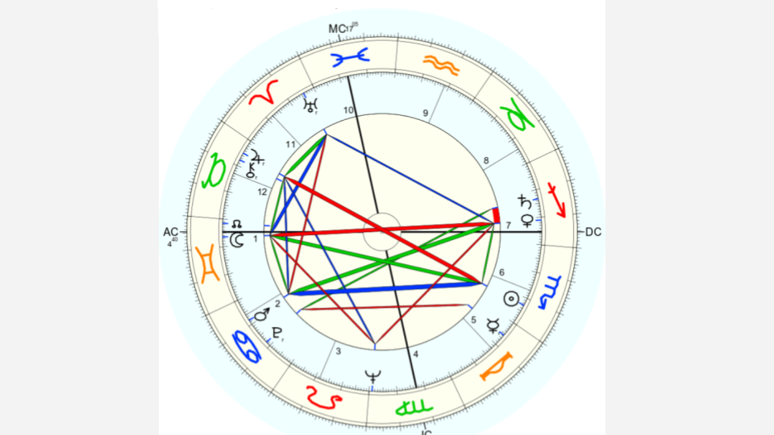
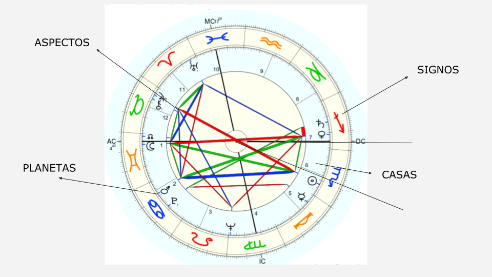

Todo lo que necesitas saber ¿Qué es?¿Qué significa? ¿Alguien dijo signo ascendente? Revelamos todas las incógnitas.
Quizás hayas escuchado que el ascendente es el como te ven los demás, o como sos físicamente. Esto es lo que más comúnmente se escucha sobre el ascendente. ¡Y esto es así, si! Pero es una parte. Porque lo que el ascendente representa es Nuestra entrada al mundo. Literalmente corresponde al momento de nuestro nacimiento. Representa el comienzo de nuestra vida. Y como salimos a enfrentarnos con el afuera. Por eso se dice que es el cómo te perciben los demás, porque hay una tendencia a lidiar y a mostrarse de cierta manera ante el mundo. Esa manera va a estar dada por tu signo ascendente. La energía del Ascendente es una energía muy importante en nosotros. Junto al sol ☀ y a la luna ☽, es de las energías más fuertes y más características.
Saber tu signo Ascendente es muy fácil. Lo único que tenés que hacer es calcular tu carta astral. Si no sabes como hacerlo, te dejo este otro blog, donde hablo sobre eso. Una vez ya calculada tu carta, podés ver tu ascendente. Es muy fácil de identificar. Cómo se puede ver en la foto de abajo, el Ascendente es ese punto que asciende, valga la redundancia, por el oeste sobre la línea del horizonte. Ese que está representado por las letras “AC”.
Ese punto AC, es el que le da inicio a la casa 1, y por lo tanto a toda nuestra carta. Siempre lo vas a encontrar en el mismo lugar. Lo que va a variar es el signo que lo ocupe. En el caso de la foto, su ascendente es en el signo de Géminis. No importa de que signo seas, tu ascendente puede estar en cualquiera de los 12 signos zodiacales, porque depende de la hora exacta de tu nacimiento.
Sii, existe! y todos tenemos uno. Así como tenemos un signo solar, al que simplemente llamamos signo. Este es el que todos conocemos porque es el dado por nuestra fecha de cumpleaños. Si naciste en los primeros días de abril, sos de aries. Si naciste a principios de febrero sos de acuario. También tenemos un signo Ascendente y No tiene porque ser del mismo signo. Podés tener dentro de tu carta astral, como vemos en el ejemplo de abajo, el sol en escorpio y tu ascendente en Géminis. Esto quiere decir que vas a tener características de ambos signos. Y si le agregamos el análisis del resto de los planetas, se armaría una ensalada terrible. Quedarse solo con el signo solar no basta. ¡Somos mucho más!
Pero enfoquémonos en el ascendente ¿Qué significa el ascendente? Como dijimos antes, el ascendente, tiene que ver con tu realidad exterior. Es la máscara que usas cuando interactúas con otras personas. Vendría a ser el traje que te pones para salir a la vida, aunque este suele ser inconsciente. Es una inclinación natural que tenemos, lo hacemos sin darnos cuenta. Es la forma en cómo los otros te perciben. Sobre todo la gente que no te conoce del todo bien, o con la que tenés un vínculo más superficial. A tus amigos, tu familia, le mostras tu Sol o tu Luna. Cuidado con signo solar y signo ascendente. No son lo mismo. A diferencia del signo solar, que representa el yo interior, el signo Ascendente representa lo que el yo exterioriza.
Conocer tu carta, es conocerte a vos mismo. Mirarte y entenderlo desde otro lugar. Espero que te haya servido y que puedas empezar a implementarlo. Si te interesa saber más y estudiar con más profundidad, te dejo el enlace a mi curso. Está pensado para quien no tiene conocimiento sobre el tema, así que es ideal para arrancar. Vas a entender bien e incorporar todos los conceptos claves. ¡La primera clase es gratuita!